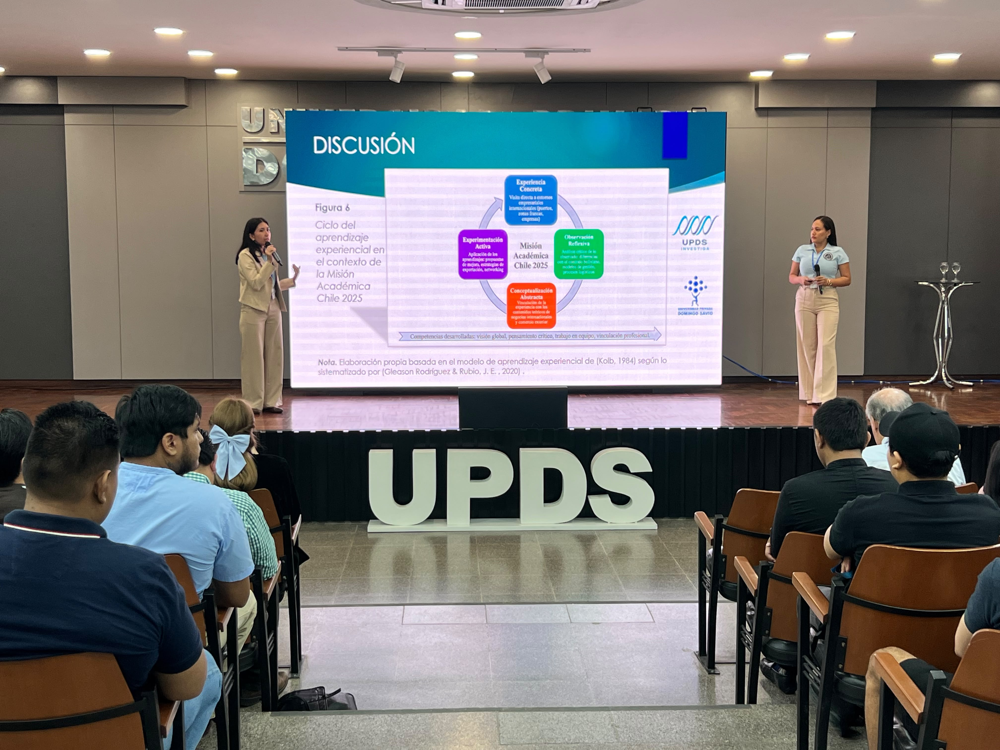
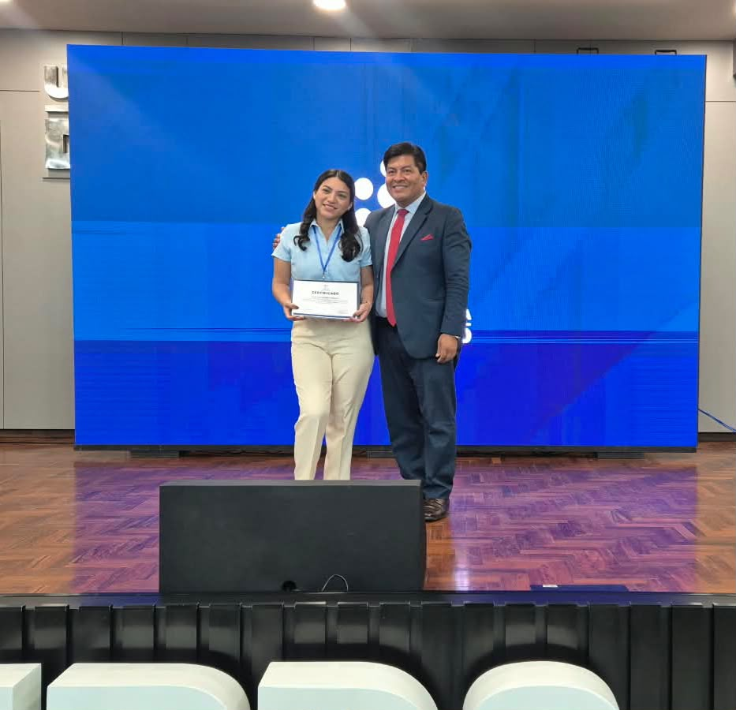
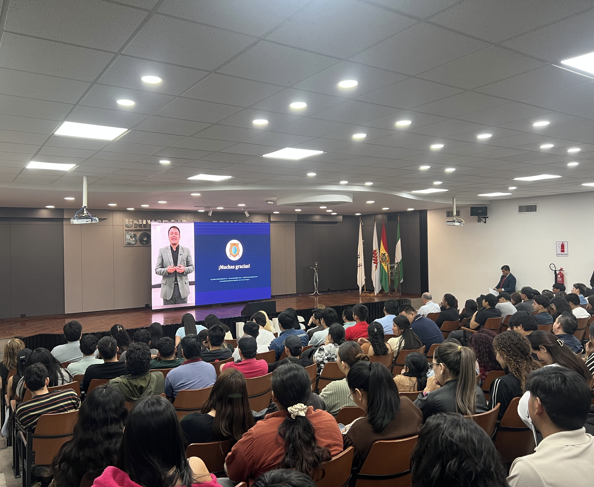
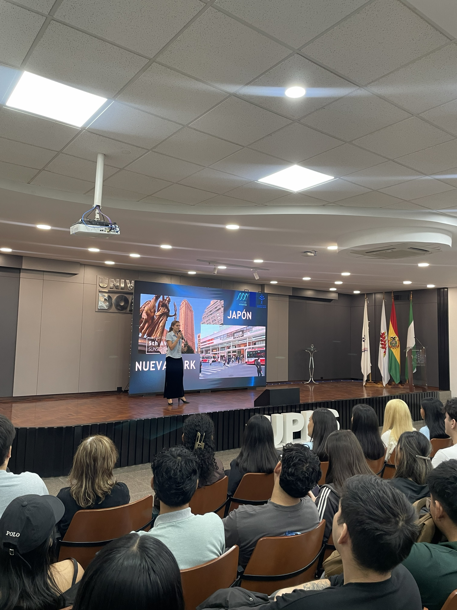
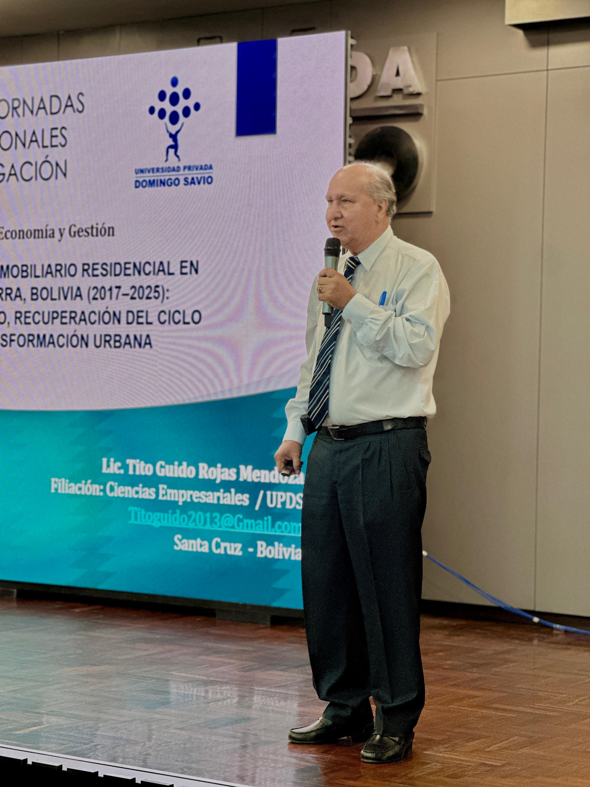
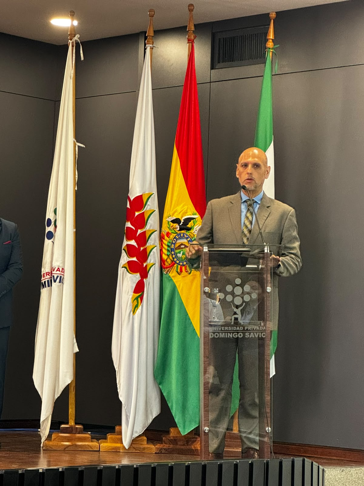
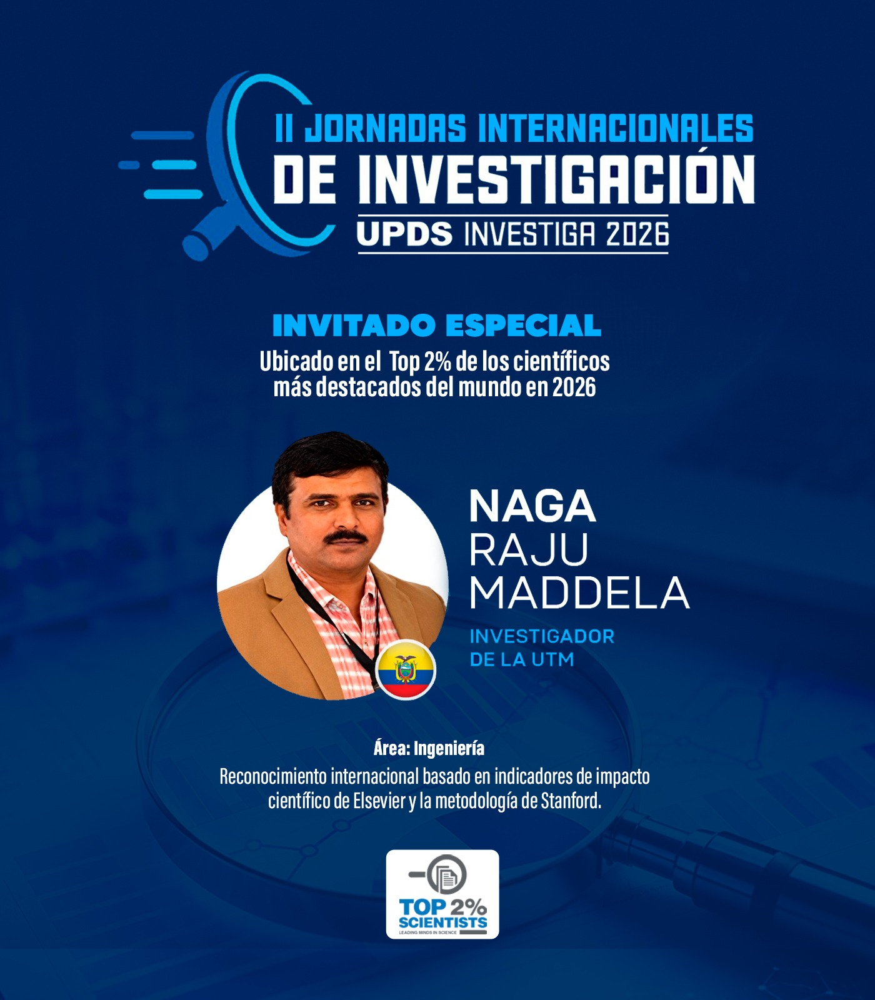

Notas

Liderazgo joven y visión empresarial destacan en UPDS Investiga 2026
Estudiantes de Ingeniería Comercial de la UPDS, compartieron sus experiencias en investigación, emprendimiento y competencias académicas
La investigación científica también es un espacio para desarrollar liderazgo, fortalecer habilidades profesionales y convertir el conocimiento en oportunidades. Así lo demostraron María Susana Menchaca Araúz y Thalía Denisse Valdivia Vidal, estudiantes de Ingeniería Comercial de la Universidad Privada Domingo Savio (UPDS), durante su participación en las II Jornadas Internacionales de Investigación UPDS Investiga 2026.
Las universitarias compartieron sus experiencias académicas y los aprendizajes obtenidos en espacios de investigación y competencias universitarias, destacando cómo estas oportunidades contribuyen a desarrollar una visión empresarial innovadora y una formación profesional más competitiva.
Menchaca Araúz, encargada de Relaciones Públicas del Semillero de Investigadores de Ciencias Empresariales, cuenta con una trayectoria estudiantil que incluye el primer lugar en el concurso de ensayos Juventud Cruceña Líder y el tercer lugar en Effie College Bolivia. Estas experiencias le permitieron reconocer el valor de aplicar los conocimientos adquiridos en las aulas a desafíos concretos, con creatividad, estrategia e innovación.
Para la estudiante, el liderazgo también implica generar un impacto positivo en el entorno y motivar a otros jóvenes a aprovechar las oportunidades que ofrece la universidad, entre ellas las misiones académicas internacionales, que permiten ampliar perspectivas y fortalecer competencias.
Por su parte, Thalía Denisse Valdivia Vidal destacó la importancia de participar en los semilleros de investigación como una vía para profundizar conocimientos, desarrollar habilidades técnicas y fortalecer capacidades como el trabajo en equipo, la comunicación y la iniciativa. Asimismo, resaltó el valor de complementar la formación académica con experiencias que acerquen a los estudiantes a nuevos escenarios profesionales.
Ambas coincidieron en que los reconocimientos y las experiencias académicas representan un aporte importante para la futura inserción laboral, al brindar herramientas para responder a las exigencias de un entorno empresarial cada vez más dinámico y competitivo.
La participación de las estudiantes en UPDS Investiga 2026 refleja el aporte de los semilleros a la formación de jóvenes capaces de vincular la investigación con la práctica profesional. En esta línea, la UPDS prioriza y respalda la investigación científica como parte de su compromiso con la formación integral, la innovación y el desarrollo sostenible.

UPDS Investiga destaca la planificación y el control de costos para impulsar los microemprendimientos universitarios
Estudiante de Ingeniería Comercial, compartió estrategias para iniciar negocios con inversiones pequeñas, administrar los recursos y priorizar la calidad de los productos
Iniciar un negocio con recursos limitados es posible si existe una adecuada planificación y un control de los costos. Esta fue una de las principales ideas expuestas por Yoselyn Suárez, estudiante de Ingeniería Comercial de la Universidad Privada Domingo Savio (UPDS), durante su presentación sobre el “Microemprendimiento universitario de producción rápida”, en la segunda edición de las Jornadas Internacionales de Investigación UPDS Investiga 2026.
Durante su intervención, la estudiante compartió recomendaciones para los jóvenes interesados en desarrollar iniciativas comerciales, con énfasis en la organización de las actividades, la administración del presupuesto y el aprovechamiento eficiente del tiempo. Estos aspectos adquieren especial importancia cuando se busca emprender sin comprometer grandes cantidades de dinero desde el inicio.
Suárez recomendó comenzar con volúmenes pequeños de productos, evaluar las posibilidades económicas y organizar las compras de acuerdo con la demanda potencial. La elección de los artículos, explicó, debe responder tanto a los intereses del emprendedor como a sus recursos disponibles, considerando opciones que van desde productos comestibles hasta otros bienes de consumo.
Otro de los aspectos destacados fue la importancia de la calidad para generar confianza y fidelizar a los clientes. Si bien una presentación atractiva puede contribuir a diferenciar una oferta comercial, el producto debe responder a las expectativas del consumidor. Por ello, la propuesta de valor debe integrar calidad, presentación y características que permitan distinguirse de la competencia.
La estudiante también advirtió sobre el riesgo de invertir en productos únicamente porque están de moda. Antes de realizar una compra, aconsejó analizar los costos, las posibilidades de venta y la rotación de la mercancía, a fin de determinar si la iniciativa puede generar resultados favorables. Este análisis permite tomar decisiones más informadas, reducir riesgos y avanzar progresivamente en la consolidación del negocio.
La exposición vinculó los conocimientos de Ingeniería Comercial con situaciones prácticas que enfrentan los jóvenes al momento de emprender. La planificación, el control de los recursos y la evaluación de las oportunidades de mercado se presentan así como herramientas fundamentales para transformar una idea en una iniciativa comercial viable.
En este marco, UPDS Investiga 2026 reúne investigaciones y propuestas académicas orientadas a compartir conocimientos, promover el pensamiento crítico y generar aportes desde distintas áreas del saber. A través de este encuentro académico internacional, la Universidad Privada Domingo Savio fortalece su compromiso con la investigación científica, la innovación y la formación de profesionales capaces de responder a los desafíos del entorno mediante propuestas que contribuyan al desarrollo sostenible.

Estudio presentado en UPDS Investiga revela el impacto económico de estudiantes brasileños en Paraguay
La investigación presentada por el economista José Darío Pérez Cardozo identificó que el alquiler de viviendas concentra la mayor actividad económica vinculada a estudiantes brasileños de Medicina en el barrio San Luis de San Lorenzo en Paraguay.
La llegada de estudiantes extranjeros no solo transforma la dinámica universitaria de una ciudad, también puede generar oportunidades económicas para las comunidades que los reciben. Así lo evidencia una investigación presentada por el economista José Darío Pérez Cardozo durante la segunda jornada de las II Jornadas Internacionales de Investigación – UPDS Investiga 2026, que analizó el impacto social y económico de los estudiantes brasileños de Medicina de la Universidad Autónoma San Sebastián (UASS) en los pequeños contribuyentes del barrio San Luis, en San Lorenzo, Paraguay.
Los resultados del estudio muestran que el alquiler de viviendas y los servicios relacionados con la vida estudiantil concentran una parte importante del movimiento económico de la zona. Según los datos expuestos, el 81,8 % de la actividad económica identificada corresponde a alquileres y viviendas, mientras que el 18,2 % está vinculado a la alimentación y otros servicios.
La investigación también identificó una percepción favorable entre los comerciantes consultados. El 62,5 % reportó una frecuencia alta de ventas y el 54,5 % manifestó una satisfacción comercial muy elevada en su interacción con los estudiantes brasileños. Estos resultados permiten observar cómo la demanda de bienes y servicios de la población universitaria puede representar una oportunidad para los pequeños negocios locales.
Para abordar esta realidad, Pérez Cardozo desarrolló una investigación con enfoque mixto, que combinó herramientas cuantitativas y cualitativas. El trabajo incluyó la participación de 43 estudiantes brasileños y 21 contribuyentes o comerciantes de la zona. Asimismo, se realizaron entrevistas guiadas a 13 estudiantes para profundizar en las razones de su elección de Paraguay como destino académico y conocer sus experiencias de integración social.
Entre los factores identificados en la decisión de estudiar en Paraguay figuran los costos de formación, el costo de vida y la cercanía geográfica con Brasil. La investigación también destacó el papel del financiamiento familiar para cubrir los gastos universitarios y de manutención, así como la iniciativa de algunos estudiantes que desarrollan pequeños emprendimientos para contribuir al sostenimiento de sus estudios de Medicina.
Más allá de las cifras comerciales, el estudio pone de relieve la relación entre movilidad estudiantil, convivencia intercultural y actividad económica local. La presencia de estudiantes extranjeros genera necesidades de vivienda, alimentación y otros servicios que pueden dinamizar el entorno, al tiempo que plantea la importancia de fortalecer los vínculos entre la comunidad universitaria y los habitantes de la zona.
La presentación de esta investigación en UPDS Investiga 2026 contribuye al intercambio de conocimientos sobre fenómenos sociales y económicos que conectan la educación superior con el desarrollo de las comunidades. A través de las II Jornadas Internacionales de Investigación, la Universidad Privada Domingo Savio promueve espacios de divulgación científica y cooperación académica internacional, orientados a generar conocimiento que permita comprender distintas realidades y aportar a la búsqueda de soluciones para los desafíos de la sociedad.

UPDS Investiga 2026 destaca propuesta estudiantil para fortalecer la educación vial y ciudadana
La estudiante de Marketing y Publicidad, presentó una investigación sobre el orden peatonal en espacios públicos y la importancia de formar ciudadanos responsables
La educación vial y la formación de valores desde la infancia fueron los ejes de la propuesta presentada por Alejandra Mendívil de la Reza, estudiante de Marketing y Publicidad de la Universidad Privada Domingo Savio (UPDS), durante las II Jornadas Internacionales de Investigación “UPDS Investiga 2026”, un espacio académico que promueve la generación de conocimiento y el análisis de los desafíos de la sociedad.
Bajo el título “Flujo de circulación empresarial: orden peatonal en espacios públicos”, la estudiante, del área de Ciencias Empresariales, planteó la importancia de fortalecer la educación ciudadana para mejorar la convivencia y fomentar el cumplimiento de las normas en los espacios compartidos.
Durante una entrevista posterior a su exposición, Mendívil señaló que la formación en el respeto debe comenzar en los primeros años de vida y reforzarse durante la educación secundaria. En ese sentido, destacó el papel de las unidades educativas en el desarrollo de conductas responsables que complementen la formación académica.
“En Bolivia vemos que se le da mucha más importancia a las notas, pero no vemos este tipo de conductas de respeto”, expresó al referirse a la necesidad de prestar mayor atención a hábitos ciudadanos como respetar los semáforos, utilizar las pasarelas y cruzar por los pasos peatonales.
La estudiante también destacó la importancia de contar con normas claras y referentes de autoridad que orienten el comportamiento de las personas. Desde su perspectiva, el respeto a las reglas contribuye a una convivencia más organizada y al reconocimiento de los derechos de los demás en los espacios públicos.
Otro de los aspectos abordados fue la diferencia entre liderar e imponer. Mendívil sostuvo que el liderazgo debe entenderse como una función orientada al servicio, la colaboración y el apoyo a otras personas, en lugar de limitarse al ejercicio de autoridad. Como ejemplo, compartió su experiencia como presidenta de un semillero, donde, según explicó, su función consiste en ayudar y ser útil a los demás.
Su participación en UPDS Investiga 2026 permitió vincular la educación, los valores y el comportamiento ciudadano con los desafíos de la organización de los espacios públicos. La propuesta resaltó la importancia de promover acciones formativas que contribuyan a desarrollar hábitos responsables y una cultura de respeto a las normas.
A través de las II Jornadas Internacionales de Investigación, la Universidad Privada Domingo Savio impulsa la participación estudiantil en espacios de intercambio académico que fortalecen el pensamiento crítico y la producción de conocimiento. De esta manera, la UPDS reafirma su compromiso con la investigación científica y la formación integral de profesionales capaces de analizar las necesidades de su entorno y aportar propuestas orientadas al desarrollo sostenible.

Investigación de la UPDS analiza el mercado inmobiliario y la expansión urbana de Santa Cruz
El estudio, presentado por el economista Tito Rojas Mendoza, identifica etapas de crecimiento y contracción del sector y examina las transformaciones habitacionales de la capital cruceña.
El crecimiento vertical y horizontal de Santa Cruz de la Sierra, reflejado en la construcción de edificios y la expansión de nuevas urbanizaciones, es el eje de una investigación presentada por Tito Rojas Mendoza, economista y magíster en Educación Superior, docente de la Facultad de Ciencias Económicas de la Universidad Privada Domingo Savio (UPDS), coordinador del Centro de Investigación Empresarial y exdirector del Instituto Nacional de Estadística (INE).
El estudio fue expuesto en las II Jornadas Internacionales de Investigación UPDS Investiga 2026, como un aporte académico para comprender las dinámicas del mercado inmobiliario y su relación con las transformaciones económicas y territoriales de Santa Cruz.
Durante su presentación, Rojas Mendoza explicó que la evolución del sector inmobiliario constituye un fenómeno relevante para analizar el desarrollo de la ciudad. La aparición de edificios de más de diez pisos, el crecimiento de las zonas residenciales y la expansión de la mancha urbana evidencian los cambios que experimenta la capital cruceña en su configuración habitacional.
Uno de los principales desafíos de la investigación fue la recopilación de información, debido a que los datos necesarios se encuentran distribuidos entre diferentes instituciones. Para afrontar esta dificultad, el equipo recurrió a diversas fuentes y contrastó información relacionada con la actividad estadística y el mercado inmobiliario.
El investigador destacó el apoyo de los estudiantes que participaron en el trabajo, así como la colaboración del Instituto Nacional de Estadística (INE), la Cámara Inmobiliaria Departamental y la Cámara Nacional Inmobiliaria. Estos aportes contribuyeron a reunir información relevante para analizar el comportamiento del sector.
Entre los resultados, Rojas Mendoza identificó distintas etapas de crecimiento y contracción del mercado inmobiliario, asociadas con las variaciones de la oferta y la demanda. Estos cambios permiten observar cómo los periodos de mayor actividad constructiva y las fases de menor dinamismo repercuten en el comportamiento económico y financiero del sector.
La investigación también distingue dos modalidades de expansión urbana que caracterizan el crecimiento habitacional de Santa Cruz. La primera es la vertical, representada por la construcción de torres y edificios de más de diez pisos; la segunda es la horizontal, vinculada con el desarrollo de nuevas urbanizaciones y la ampliación de las áreas residenciales.
Más allá de describir estas transformaciones, el estudio plantea la importancia de analizar el mercado inmobiliario como una fuente de información para comprender las tendencias económicas y evaluar las decisiones de inversión. Este enfoque también abre oportunidades para fortalecer la formación de los estudiantes de la Facultad de Ciencias Económicas, mediante el desarrollo de competencias para interpretar datos, analizar mercados y comprender el comportamiento de las inversiones.
De esta manera, la investigación vincula el conocimiento académico con una realidad que transforma el territorio y la economía regional. Asimismo, destaca el valor de la colaboración entre estudiantes, investigadores e instituciones para reunir información, estudiar fenómenos concretos y generar conocimientos útiles para comprender el entorno.
Las II Jornadas Internacionales de Investigación UPDS Investiga 2026 constituyen un espacio de intercambio académico que reúne investigaciones de distintas áreas del conocimiento y promueve la cooperación entre investigadores nacionales e internacionales. A través de esta iniciativa, la Universidad Privada Domingo Savio impulsa la investigación científica como parte de su compromiso con la excelencia académica, la innovación y el desarrollo sostenible.
La UPDS respalda la generación de conocimiento orientado a comprender los desafíos de la sociedad y aportar nuevas perspectivas para su análisis. En este marco, investigaciones como la de Rojas Mendoza contribuyen a ampliar la comprensión de las transformaciones urbanas y económicas de Santa Cruz, al tiempo que fortalecen la formación investigativa de la comunidad universitaria.

UPDS Investiga 2026 inicia su segunda edición con 54 ponencias de siete países
El vicerrector académico de la UPDS, destacó la investigación científica como un pilar de la formación profesional, en el marco de las jornadas internacionales que se desarrollan este 20 y 21 de octubre.
La Universidad Privada Domingo Savio (UPDS) puso en marcha la segunda edición de las Jornadas Internacionales de Investigación UPDS Investiga 2026, un encuentro académico que reúne 54 ponencias de siete países. Durante la inauguración, el vicerrector académico, José Antonio Landriel Pedraza, destacó los ocho años de trabajo institucional orientado a fortalecer la investigación científica y su aporte a la formación universitaria.
La autoridad señaló que este encuentro representa el trabajo conjunto de las cinco facultades de la universidad y forma parte de un proceso institucional que lleva ocho años impulsando iniciativas orientadas a fortalecer la producción científica. En ese periodo, la UPDS ha desarrollado espacios y recursos destinados a involucrar a docentes y estudiantes en la generación de conocimientos y en la búsqueda de soluciones a los desafíos de la sociedad.
Entre los avances mencionados, Landriel destacó la consolidación de cinco semilleros de investigación, cinco centros facultativos, revistas científicas indexadas y publicaciones de libros. Estas iniciativas buscan promover la participación de la comunidad universitaria en actividades investigativas y contribuir al desarrollo de competencias que complementen la formación académica.
Asimismo, enfatizó que investigar permite a los futuros profesionales desarrollar pensamiento crítico, analizar problemas desde distintas perspectivas y proponer soluciones en sus respectivas áreas de formación. En ese sentido, remarcó que la investigación no debe limitarse al cumplimiento de una actividad académica, sino convertirse en una oportunidad para ampliar horizontes profesionales, producir nuevos conocimientos y enriquecer las ideas existentes.
El vicerrector también alentó a los estudiantes a involucrarse desde ahora en los semilleros y demás iniciativas científicas de la universidad, sin esperar a concluir sus estudios para comenzar a investigar. Destacó la importancia de cuestionar lo establecido, contrastar perspectivas y generar aportes propios que contribuyan al avance del conocimiento.
Dos jornadas para compartir conocimiento
UPDS Investiga 2026 se desarrolla este 20 y 21 de octubre con la participación de docentes, estudiantes e investigadores de distintas áreas del conocimiento. El programa contempla ponencias orales y presentaciones de pósteres científicos, espacios que permiten exponer resultados, intercambiar experiencias y establecer contactos con integrantes de otras comunidades académicas.
La diversidad de investigaciones y la participación internacional amplían las posibilidades de cooperación entre universidades y abren oportunidades para desarrollar iniciativas conjuntas. De esta manera, el encuentro busca fortalecer la difusión de la producción científica y promover el diálogo interdisciplinario como parte del desarrollo académico.
Con esta segunda edición, la Universidad Privada Domingo Savio reafirma su apuesta por una educación superior vinculada con la investigación, la innovación y el desarrollo sostenible. A través de estos espacios, la institución promueve una formación que impulsa a los universitarios no solo a adquirir conocimientos, sino también a cuestionar, investigar y generar nuevas ideas que contribuyan a su crecimiento profesional y a las necesidades de la sociedad.

Investigador incluido entre el 2 % de los científicos más destacados del mundo participará en UPDS Investiga 2026
Naga Raju Maddela, investigador de la Universidad Técnica de Manabí (Ecuador), compartirá su experiencia internacional con aportes en microbiología ambiental y soluciones científicas frente a la contaminación.
La investigación científica trasciende fronteras cuando el conocimiento se convierte en una herramienta para responder a los desafíos ambientales. Con esa perspectiva, el Dr. Naga Raju Maddela, investigador y docente de la Universidad Técnica de Manabí (UTM), Ecuador, participará en las II Jornadas Internacionales de Investigación – UPDS Investiga 2026, un encuentro académico que reunirá a investigadores nacionales e internacionales los días 20 y 21 de octubre.
La trayectoria del científico destaca por su inclusión en el listado World’s Top 2% Scientists 2026, una clasificación internacional que identifica a investigadores con un impacto significativo en sus respectivas áreas de conocimiento, a partir de indicadores bibliométricos. Esta distinción, asociada a la evaluación de la producción científica y las citaciones, refleja la proyección internacional de su trabajo académico.
Naga Raju Maddela desarrolla investigaciones en microbiología ambiental, con especial atención a la biorremediación de suelos, la degradación de hidrocarburos, la contaminación por microplásticos y la mitigación de los efectos de metales pesados en cultivos agrícolas. Sus líneas de estudio abordan problemáticas que demandan respuestas científicas capaces de contribuir a la protección de los ecosistemas y al desarrollo sostenible.
Su producción académica comprende más de 270 trabajos de investigación, de acuerdo con la información proporcionada, con publicaciones y citaciones registradas en plataformas científicas como Google Scholar y ResearchGate. A lo largo de su trayectoria internacional, también estuvo vinculado con la Universidad Sun Yat-sen, en China, y llegó a Ecuador mediante el programa de excelencia Prometeo, orientado a fortalecer las capacidades científicas del país mediante la incorporación de investigadores de reconocida trayectoria.
La participación de Naga Raju Maddela forma parte de la agenda de UPDS Investiga 2026, iniciativa organizada por la Facultad de Ciencias Sociales de la Universidad Privada Domingo Savio (UPDS), que promueve el intercambio de conocimientos, la divulgación científica y la colaboración entre investigadores de distintas instituciones y países.
Durante las jornadas, la comunidad académica tendrá la oportunidad de conocer experiencias y perspectivas de investigación que vinculan la producción científica con los desafíos contemporáneos. La presencia de especialistas con trayectoria internacional contribuye, además, a ampliar el diálogo académico y a generar nuevas oportunidades de cooperación en diferentes áreas del conocimiento.
Con esta iniciativa, la UPDS reafirma su compromiso con la excelencia académica, la internacionalización y la generación de conocimiento pertinente para la sociedad. La universidad prioriza la importancia de promover y respaldar la investigación científica en la comunidad académica, convencida de que investigar significa abrir caminos hacia la innovación, comprender mejor la realidad y contribuir a un desarrollo sostenible.

UPDS Investiga 2026 reunirá a 54 ponentes de siete países en una agenda internacional de investigación
Las jornadas internacionales se desarrollarán el 20 y 21 de octubre y abordarán investigaciones de cinco áreas del conocimiento, con participación de académicos de Bolivia y otros seis países.
La Universidad Privada Domingo Savio (UPDS) realizará los días 20 y 21 de octubre las Jornadas Internacionales de Investigación “UPDS Investiga 2026”, un encuentro académico que reunirá a 54 ponentes de Bolivia, Ecuador, Paraguay, Chile, Perú, España y Argentina, para compartir investigaciones y experiencias en diferentes áreas del conocimiento. La actividad será organizada este año por la Facultad de Ciencias Sociales y contará con una programación de ponencias orales y sesiones de póster, orientadas a promover el intercambio de conocimientos entre investigadores, docentes y estudiantes de distintas disciplinas. Las jornadas contemplan la participación de especialistas en cinco áreas: Ciencias Empresariales, Ciencias de la Salud, Ingeniería y Tecnología, Ciencias Sociales y Ciencias Jurídicas, configurando un espacio multidisciplinario para la presentación y difusión de investigaciones. La presencia de expositores provenientes de siete países permitirá ampliar el intercambio académico y generar un espacio de diálogo sobre diferentes perspectivas, metodologías y resultados de investigación. La participación internacional también contribuirá a fortalecer los vínculos académicos y la proyección de la investigación desarrollada en la universidad. UPDS Investiga 2026 dará continuidad a la experiencia desarrollada en la edición 2025, que contó con la participación expositores nacionales e internacionales y se consolidó como un espacio de encuentro para la presentación y socialización de investigaciones. Con esta nueva edición, la UPDS fortalece su apuesta por la investigación y la divulgación científica, generando espacios para que docentes, estudiantes e investigadores compartan sus aportes, intercambien conocimientos y establezcan nuevas oportunidades de colaboración académica.

UPDS Investiga 2026 reunirá investigaciones de siete países en diversas áreas del conocimiento
Seis de los 54 ponentes que participarán en las jornadas internacionales presentarán estudios sobre competencias empresariales, economía, neuroinflamación, bienestar y atención clínica inclusiva, con representación de Bolivia, Paraguay, Perú y Chile.
La investigación universitaria permite analizar problemas concretos y proponer respuestas desde distintas áreas del conocimiento. Esa diversidad estará presente en las Jornadas Internacionales de Investigación UPDS Investiga 2026, que se realizarán el 20 y 21 de octubre, con la participación de 54 ponentes de Bolivia, Ecuador, Paraguay, Chile, Perú, España y Argentina. La representación boliviana tendrá un espacio destacado con investigaciones desarrolladas desde la Universidad Privada Domingo Savio (UPDS), que abordarán el impacto de las experiencias académicas internacionales en las competencias empresariales, los indicadores de bienestar y autocuidado en personas con VIH y el diseño de protocolos de comunicación clínica inclusiva para personas con discapacidad sensorial. Organizado este año por la Facultad de Ciencias Sociales de la UPDS, el encuentro comprenderá cinco áreas del conocimiento: Ciencias Empresariales, Ciencias de la Salud, Ingeniería y Tecnología, Ciencias Sociales y Ciencias Jurídicas, con una programación de ponencias orales y sesiones de póster. En Ciencias Empresariales, María Susana Menchaca Araúz, junto con la coautora Thalía Denisse Valdivia Vidal, ambas de Bolivia, presentará una investigación sobre el impacto de la Misión Académica Chile 2025 en las competencias empresariales. El trabajo analiza una experiencia académica internacional vinculada con la formación y el desarrollo de capacidades en el ámbito empresarial. Desde Paraguay, José Darío Pérez Cardozo expondrá un estudio sobre el impacto social y económico de los estudiantes brasileños de Medicina de la UASS en los pequeños contribuyentes del barrio San Luis, en San Lorenzo. La investigación aborda la relación entre la presencia de estudiantes extranjeros y la dinámica económica de los pequeños negocios de una comunidad. Por su parte, el investigador peruano Edgar Meza Mescco presentará una revisión sistemática de literatura sobre la estructura de costos operativos en la industria cementera, centrada en la revisión y organización del conocimiento publicado sobre un componente relevante para la gestión industrial. En Ciencias de la Salud, Wara Salinas, de Chile, abordará el rol de las vitaminas para regular la neuroinflamación presente en modelos de autismo, una temática vinculada con el estudio de procesos biológicos asociados al neurodesarrollo. La participación boliviana en esta área también incluirá el trabajo de Ruth Koria Saracho, quien presentará una investigación sobre las características sociodemográficas y clínicas, así como los indicadores de bienestar y autocuidado, de personas con VIH en seguimiento en el SSU. El estudio incorpora dimensiones clínicas y sociales para examinar aspectos relacionados con el bienestar y el cuidado de esta población. Asimismo, Madleen Díaz Estrada, de Bolivia, expondrá la propuesta “Anafilaxia sin barreras: diseño de un protocolo multimodal de comunicación clínica inclusiva para personas con discapacidad auditiva y visual en Bolivia”. La investigación se orienta al diseño de herramientas de comunicación clínica accesibles para personas con discapacidad sensorial, con el propósito de contribuir a una atención sanitaria más inclusiva. La diversidad de los trabajos refleja el carácter multidisciplinario de UPDS Investiga 2026, que reunirá perspectivas nacionales e internacionales para analizar desafíos empresariales, sociales, tecnológicos, jurídicos y sanitarios. Las jornadas darán continuidad a la experiencia desarrollada en 2025 y abrirán un nuevo espacio para compartir resultados, contrastar enfoques y establecer vínculos entre investigadores, docentes y estudiantes de distintos países. Con esta edición, la UPDS reafirma su apuesta por la investigación y la divulgación científica, promoviendo la participación de investigadores bolivianos junto a representantes internacionales y generando oportunidades para el intercambio de conocimientos y la colaboración académica.